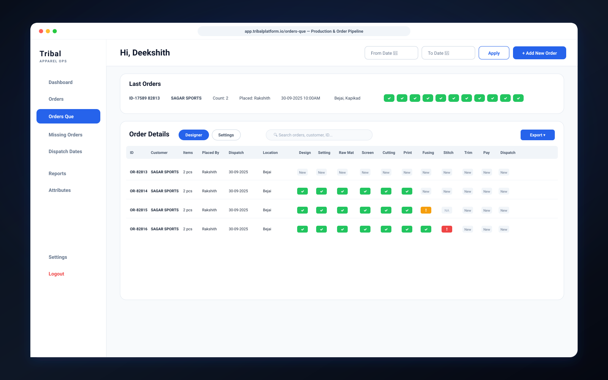
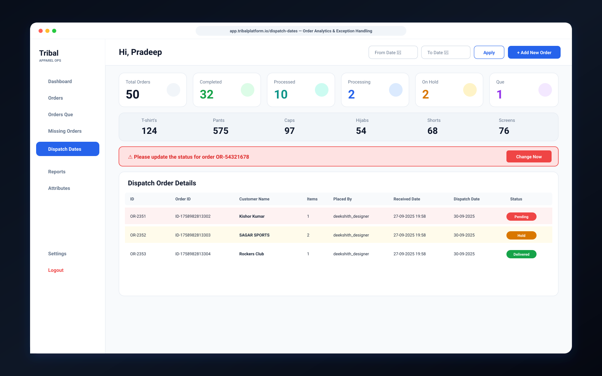
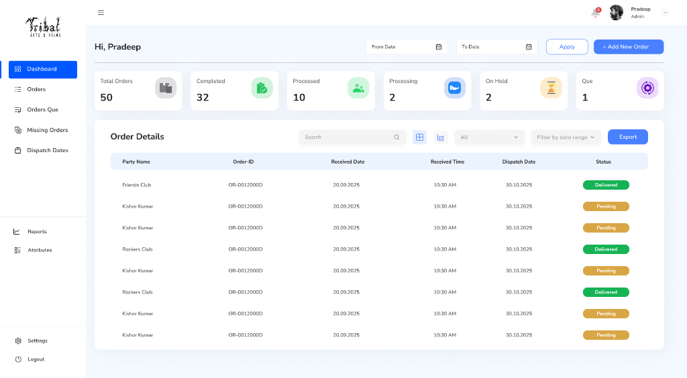
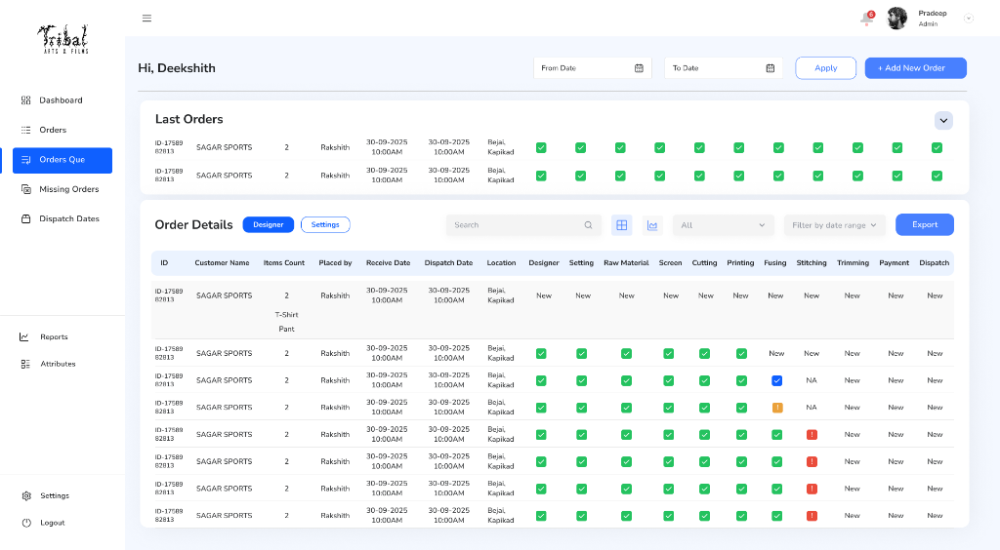
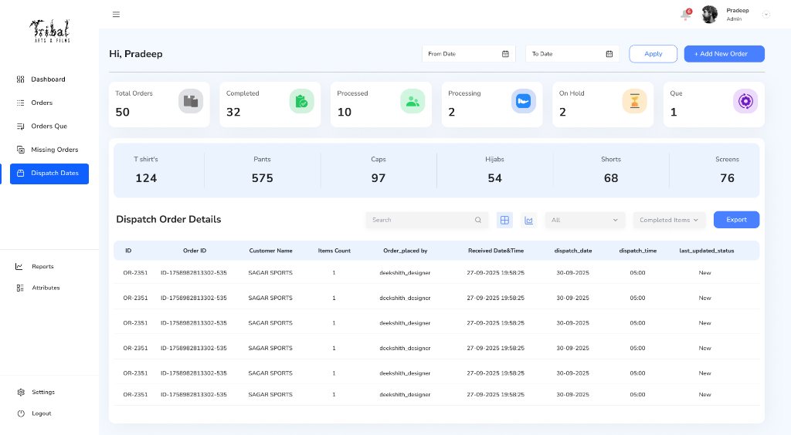
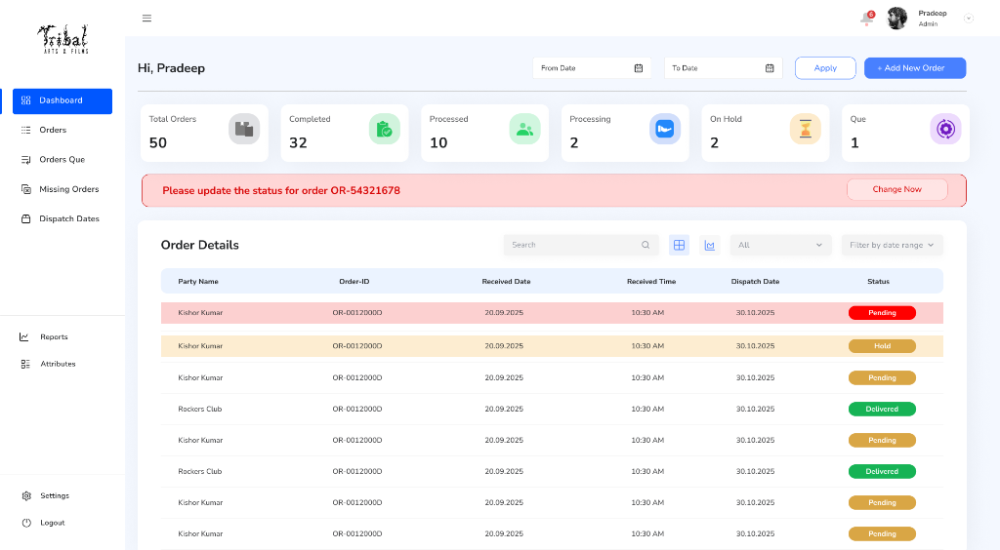

TRIBAL
Simplifying complex clothing production workflows.
A centralized production management platform designed to help apparel businesses track orders, monitor production stages, manage dispatches, and keep day-to-day operations moving efficiently.

Bringing the entire production workflow into one view.
Clothing production involves multiple teams, stages, deadlines, and operational dependencies.
TRIBAL was designed to bring these moving parts into a centralized digital workspace where teams can quickly understand what has been received, what is being processed, what is delayed, and what is ready for dispatch.
The design focuses on turning large amounts of operational information into clear, actionable views without forcing production managers to jump across disjointed spreadsheets.

High-level operational metrics on the supervisory monitor paired with granular stage-by-stage queue tracking on the production floor laptop.
Making high-volume production data easy to understand.
The product needed to support teams working with a large volume of orders and fast-moving production stages. The core challenge was creating an interface where operators can instantly identify:
Information Density
Production teams need rapid access to dense operational records, line items, and customer orders without navigating through multiple disjointed screens.
Multiple Production Stages
Orders move through 11 distinct operational stages: design, raw material, screening, cutting, printing, fusing, stitching, trimming, payment, and dispatch.
Status Visibility
Teams require immediate visual feedback about whether an order is newly placed, actively processing, completed, delayed, or flagged for inspection.
Operational Speed
The interface must support hundreds of daily interactions throughout intense shifts; search, filters, and batch status changes must be frictionless.
Designing around the way production teams work.
Rather than forcing manufacturing operators to adapt to rigid database software, the product architecture was organized naturally around the operational lifecycle of an apparel order.
Order Received
Capture customer profile, product SKU, quantities, and line item requirements into the central registry.
Production
Track the physical garment order across each sequential manufacturing department on the factory floor.
Quality & Status
Monitor real-time progress, verify garment counts, and instantly catch incomplete or bottlenecked stages.
Dispatch
Prepare verified production runs for courier dispatch, package tracking, and client handover.
Reporting
Provide executive and operations leadership with high-level throughput analytics and performance metrics.
A command center for daily production operations.
The dashboard brings high-level operational information into a single view. Before diving into dense line items, managers gain immediate situational awareness of current factory volume and garment distribution.
Overall order volume in active lifecycle
Finished required manufacturing workflow
Progressed past initial material and cut
Actively stitching (2) or awaiting review (2)

Turning every order into a visible production journey.
Instead of forcing users to open individual orders repeatedly, the interface provides a consolidated production matrix where each stage can be understood at a glance.
Visual Status
Color-coded indicators communicate stage progress, active work, and hold conditions instantly.
Stage Visibility
All manufacturing departments remain visible within the same operational row context.
Scannability
Dense stage data is mapped into consistent, predictable column grids for rapid tracking.
Actionable Exceptions
Incomplete or problematic stages surface bright visual flags so teams know where to intervene.

Keeping completed orders moving.
The dispatch view provides a dedicated workspace for monitoring apparel batches that have cleared QC and are ready or scheduled for packaging and freight shipment.
By isolating dispatch deadlines from factory-floor WIP, logistics coordinators can coordinate pickups without losing customer order context.

Designing for the moments that need attention.
Not every apparel order follows the ideal path. Fabric rolls arrive late, screens require recalibration, and payments stall. TRIBAL uses visual alert banners, contextual badges, and high-visibility row highlights to make exceptions impossible to overlook.

Designing clarity into a data-heavy interface.
The visual system pairs high-contrast structure with restrained accent colors. By keeping the canvas neutral and surfaces crisp white, status badges and critical alerts command immediate visual priority.
Clear Hierarchy
Strong typography, clean card groupings, and consistent vertical rhythm make dense production data comfortable to navigate during long shifts.
Structured Tables
Rigid column width standards, monospace numeric alignment, and generous row tap targets make tracking multi-thousand unit orders effortless.
Progressive Information
High-level KPIs summarize factory health first; detailed garment line items and customer notes are revealed on contextual interaction.
Turning production complexity into operational clarity.
Centralized Operations
Multiple fragmented spreadsheets and verbal check-ins brought together into one unified operational workspace.
Faster Status Recognition
Restrained color coding and stage pills allow floor managers to assess order health in seconds.
Better Production Visibility
Teams trace every single apparel order through all 11 physical production stages without leaving their desk.
Scalable Enterprise UX
Modular table components and filter systems establish the standard for future factory line additions and warehouse tools.
“By replacing disconnected spreadsheets and manual phone checks with a unified, stage-by-stage production dashboard, TRIBAL gives apparel manufacturers the visibility they need to keep orders on schedule and eliminate dispatch bottlenecks.”
Designing for people who work with data all day.
TRIBAL reinforced the vital importance of designing enterprise software around speed, clarity, and repeatability. Unlike consumer mobile apps, enterprise production management tools are used for 8 to 10 hours continuously every day.
The central design challenge was finding the optimal equilibrium between information density and cognitive clarity. Over-simplifying would rob production controllers of critical batch details; under-structuring would overwhelm them with data noise.
The final product succeeds because it stays focused on five operational principles: Visibility, Consistency, Speed, Status, and Action.
TRIBAL
Clothing Manufacturing & Production Management Platform
Designing complex products, one workflow at a time.
Have a complex enterprise product or operational workflow that needs to become clearer and easier to use? Let's discuss your product goals.